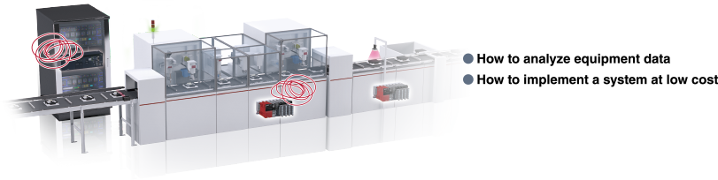
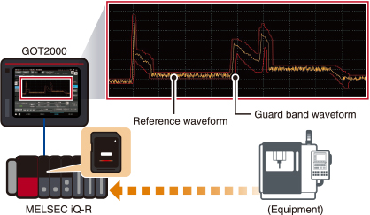
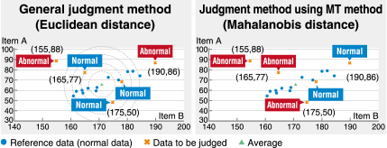
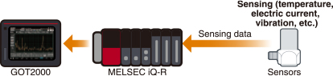

Solusi
Koleksi dan Analisis Data

Siklus untuk Peningkatan Lantai Pabrik dengan Pemanfaatan Data
Meningkatkan produktivitas, kualitas, dan efisiensi energi dengan memanfaatkan data lantai pabrik untuk menemukan kunci pemecahan masalah produksi dan mendorong peningkatan
Kasus12Melakukan analisis dan diagnosis dengan PLC
Visualisasi
analisa
Diagnosis
Masalah


Solusi
Menganalisis dan mendiagnosis dengan cepat dan berbiaya rendah dengan proyek contoh gratis (Paket Pemula e-F@ctory) yang dilengkapi dengan berbagai metode analisis/diagnosis.
e-F@ctory Starter Package
Manfaat dari e-F@ctory Starter Package
➊ Biaya awal rendah
- Biaya awal rendah karena tidak perlu membuat program sekuens dan menyaring data dari awal.
❷ Implementasi IoT yang mudah untuk peralatan
- Fungsi IoT dapat ditambahkan dengan pengaturan dasar*1.
*1. Penetapan perangkat, pendaftaran parameter, dll.
Pemantauan pita pelindung gelombang
● Fitur
- Bentuk gelombang pita pelindung dibuat dari bentuk gelombang referensi, dan data bentuk gelombang input dipantau.
- Bentuk gelombang pita pelindung yang dibuat dapat disimpan dan dibaca dalam format CSV. Bentuk gelombang pita pelindung yang dibuat oleh komputer juga dapat dibaca.

Metode MT*2 diagnosis sederhana
● Apa itu metode MT?
- Metode MT adalah metode analisis multivariat untuk mendeteksi anomali.
- Dalam metode ini, referensi (ruang satuan) dibuat dari data normal, dan kenormalan/anomali dinilai dari derajat deviasi (jarak Mahalanobis) antara referensi dan data terukur yang dikuantifikasi.
*2.MT adalah singkatan dari Mahalanobis-Taguchi.

● Fitur
- PLC menghitung kuantitas fitur data deret waktu dan getaran, dan jarak Mahalanobis dipantau oleh metode MT.
- PLC dan GOT adalah satu-satunya perangkat yang diperlukan untuk mengumpulkan, memvisualisasikan, menganalisis, dan mendiagnosis data. Perangkat ini tersedia secara luas dan memerlukan perawatan yang rendah, sehingga integrasi di lantai pabrik menjadi mudah.
